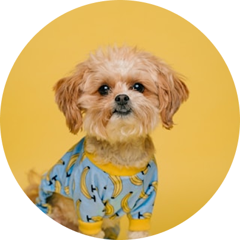

RAÇÕES PARA
CÃES
Dog Chow da Purina, Gran Plus, Golden, Premiere, Royal Canin e outras de qualidade similar.
Ao se tornar um colaborador mensal, você contribui de forma contínua para a manutenção dos nossos projetos e o cuidado dos animais resgatados. Seu apoio mensal garante que possamos seguir oferecendo abrigo, alimentação e tratamento a cada um deles.
Tornar-se um colaborador!Contribuição simbólica, para quem quer começar ajudando um pouquinho todo mês.
“Um pequeno gesto que faz um
rabinho balançar de alegria!”
Toda ajuda faz diferença na vida dos nossos amigões peludos! A alimentação é uma das partes mais importantes do cuidado. Ao contribuir com doações em dinheiro ou ração de qualidade, você ajuda a garantir a saúde e a longevidade dos nossos animais, reduzindo o risco de doenças.
Dog Chow da Purina, Gran Plus, Golden, Premiere, Royal Canin e outras de qualidade similar.
Cat Chow da Purina, Golden, Royal Canin e outras de qualidade similar.